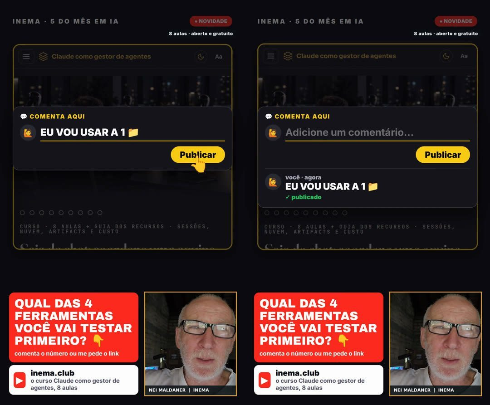

r7ex es la línea de producción de reels verticales (9:16) de INEMA. Tú aportas una idea potente, la tesis, y crea un video de unos 40 a 46 segundos (siempre por debajo de 1 minuto) con el avatar de Nei hablando, imágenes generadas por Codex y un acabado de noticiero: título al inicio, paneles que aparecen en la palabra adecuada, contador y subtítulos que se iluminan al ritmo de la voz. El guion sigue 7 etapas de activación, desde el gancho (uno de 5 tipos, con el titular ya escrito en el primer cuadro) hasta la invitación a comentar, y siempre lleva a la persona a inema.club. Para usarlo necesitas Python, Node, Codex y una suscripción a HeyGen, ejecutándose en la máquina de INEMA.
Qué es
El guion de r7e con el acabado del noticiero
r7ex = r7e + x. r7e (reel7etapas) aporta el guion en 7 etapas; la x viene de eventosextremospub, el acabado de noticiero que más se viralizó. El repo funciona solo, con copia propia de todo.
🎯 Plan antes de hablar
Público, qué quiere la persona, gancho de uno de los 5 tipos con número y fuente (nunca una lista), nota de potencial (por debajo de 8, se cambia el enfoque) y la página de inema.club que ofrece la solución. Un tema por video.
📺 Cara de noticiero
Título dibujado en la apertura, negro y amarillo, franja con sello rojo, paneles y contadores al ritmo del habla y subtítulo karaoke.
🧩 Independiente
Motor de render, estudio de HeyGen, transcripción, pista musical, envío al bot y cola copiados dentro del repo. Cambiar algo aquí no afecta a los otros proyectos.
7
partes en el guion, del gancho al comentario
40–46 s
de duración, con una tarjeta de 9 s al final (siempre por debajo de 60 s)
450–620
caracteres de habla por reel (un tema con muchos elementos: hasta 800, con motivo)
≥ 90%
del habla coincidiendo con el avatar (filtro del retempo)
Las 7 etapas
Ejemplo real: "Hackers robaron las claves"
El orden de las etapas 2 a 6 puede adaptarse al tema (en el reel "Quién factura en 2027" la etapa 3 se volvió prueba), pero siempre son 7 partes.
Etapa
Habla
Pantalla
1. Gancho (tercero)
"Un tipo se fue a dormir y se despertó con una cuenta de IA de mil setecientos dólares…"
titular "ACORDOU DEVENDO US$ 1.700" dibujado en la portada con la llave partida; cortes de acercamiento a 1 s y 2 s
2. Miedo
"La clave es la contraseña que usa la IA… la tuya puede ser la próxima"
encapuchado sacando la clave + panel rojo
3. Deseo
"Imagina dormir sabiendo que… la pérdida tiene tope"
hombre durmiendo + "pérdida con tope"
4. Facilidad
"No necesitas ser especialista, ni programador"
panel de límite + "sin ser especialista"
5. Descubrimiento
"Son tres ajustes: límite, una clave por uso, alarma…"
candado, claves y campana + los 3 ajustes entrando
6. Beneficio
"El susto se convierte en un aviso en el celular…"
factura rota + "sin límite × con límite"
7. Comentario
"Está todo en inema.club. O pídeme el link…"
captura de inema.club + CTA rojo en pregunta + tarjeta del comentario en pantalla durante 9 s
Cómo funciona
El motor no crea contenido: sincroniza y anima
El motor es una página web (motor/mapa.html) filmada a 30 cuadros por segundo. Recibe el avatar, el tiempo de cada palabra, las imágenes y la escena generada desde la ficha.
Tesis + destino→Plan y ficha→Avatar en HeyGen→Imágenes de Codex→Tiempo de las palabras (Whisper)→Ritmo (~180 palabras/min + tarjeta)→Escena→Render→Hoja de revisión→Bot v3 + cola del canal
1
Capas por cuadro
Fondo negro, imagen del momento con zoom leve, franja superior con sello, panel con ítems y contador, subtítulo karaoke y el CTA en pregunta.
2
Filmación
motor/render.mjs graba la página en un Chrome oculto (pantalla :99), sin abrir nada en la pantalla de quien trabaja.
3
Composición
motor/compor_avatar.sh pone el rostro en la cajita de la esquina, la voz a −14 LUFS y la pista baja, que se atenúa cuando entra la voz, se silencia en la pausa antes de la frase final y continúa durante la tarjeta final.
Requisitos previos
Lo que debe estar en la máquina
r7ex fue hecho para el servidor de INEMA. Las copias en otra máquina necesitan las mismas piezas.
Python + Node
Python 3 para los scripts y el Whisper local (el de inemavox); Node para el motor de render y el estudio de HeyGen; ffmpeg para el ritmo y la composición; Claude Code (claude -p) para la nota del plan.
npm install# dependencias del motor
Codex CLI
Dibuja la apertura con el título y una imagen por parte, con la suscripción.
codex --version
HeyGen (estudio)
Avatar de Nei con la suscripción, en el navegador oculto. Generar solo con el OK de esa producción.
# OK de Nei para este reelmkdir -p edicoes/<pasta>/avatar
echo'Nei, <data>: "ok"' > edicoes/<pasta>/avatar/APROVADO_HEYGEN
Guía de uso · paso a paso
Del pedido al reel en la cola
Basta un pedido en una línea: "r7ex: <tu tesis> · destino: <curso/página> · canal: lives7 · puedes generar el avatar". Después, estos son los comandos.
1
Crear la edición
Copia el modelo a una carpeta nueva con la ficha por completar: plan, apertura, las 7 partes (habla + imagen o captura + panel), CTA y destino.
Comprueba las 7 partes, que el texto hablado tenga entre 450 y 620 caracteres (un tema con muchos elementos: hasta 800, con fala_max y fala_max_motivo en la ficha), que cada palabra de los paneles aparezca en el texto hablado de esa parte y el bloque gancho: tipo válido, titular de hasta 6 palabras distinto del texto hablado, prueba hasta ~20 s y absolución. Los ganchos en forma de lista no pasan. Después, plano puntúa el guion: necesita un gancho ≥ 8 y un promedio ≥ 7,5 antes de grabar el avatar.
python3 r7ex.py checaredicoes/<data>-hackerpython3 r7ex.py planoedicoes/<data>-hacker# nota del plan
3
Hacer todo de una vez
Imágenes + avatar → tiempo de las palabras → ritmo (habla alargada, pausa antes de la frase final, tarjeta de 9 s) → escena → render → hoja de 12 cuadros. Con --de reutiliza un avatar ya hecho.
python3 r7ex.py fazeredicoes/<data>-hackerpython3 r7ex.py fazeredicoes/<data>-hacker --de avatar.mp4 # el avatar ya existe
4
Revisar antes de enviar
Leer la apertura (ortografía del título) y la hoja de revisión: nada tapando nada, capturas legibles.
# abrir y revisar
edicoes/<pasta>/capa/abertura.png
edicoes/<pasta>/build/folha.jpg
5
Enviar y publicar por la cola
Manda el video al bot v3 y lo pone al final de la cola del canal (por defecto lives7). La cola publica 1 cada 2 h, de 9 h a 21 h. Nunca subida directa.
python3 r7ex.py enviaredicoes/<pasta># bot v3python3 r7ex.py filaedicoes/<pasta># final de la cola del canalpython3 fila/fila.py --status# ver la cola
Paso a paso por separado: avatar, imagens, cena, render, revisar (ejecuta python3 r7ex.py para verlos todos).
Ejemplos
Reels hechos con r7ex
Cuadros de los reels finales: apertura con el título dibujado, imagen por etapa, panel al ritmo del habla y la tarjeta del comentario en pantalla al final, con inema.club.
Reel 1: "Mis reels tuvieron cero vistas, 4 lotes hasta acertar" — hecho por el propio r7ex (en portugués).Reel 2: "El reel de 7 etapas quedó viejo, ahora existe el r7ex" — r7e × r7ex (en portugués).
"Hackers robaron las claves": gancho con número (US$ 1.700 en una noche), miedo, los 3 ajustes y el cierre. Ver en YouTubeOtro reel del mismo lote, con el mismo avatar e imágenes nuevas dibujadas por Codex.
Novedades · v1.2.0 · 28/10/2026
El gancho se decide en los primeros 3 segundos
Comparamos los reels de r7ex con reels que enganchan: usaban la misma estructura, pero no las técnicas para llamar la atención. La edición del 28/10 empezaba con "5 novedades de IA…", un gancho en forma de lista que no aparece en ninguno de los reels de referencia. La versión 1.2.0 trata el primer cuadro como la portada del video.
Tipo de gancho
Qué es
contrario PARA DE CORRIGIR IA NO CHAT (deja de corregir la IA en el chat)
manda parar o invierte el sentido común
perda E SE SEU CHAT SUMISSE AMANHÃ? (¿y si tu chat desapareciera mañana?)
pérdida hipotética
estatistica METADE DO CÓDIGO É LIXO (la mitad del código es basura)
noticia SAIU O CARRO VOADOR? (¿salió el coche volador?)
hecho de esta semana, con fecha y fuente
Los nombres de los tipos (contrario, perda, estatistica, terceiro, noticia) son los valores literales de gancho.tipo en la ficha. Los titulares quedan en portugués, tal como aparecen en el video; la traducción va debajo.
1
El titular es más potente que lo que se dice
El titular ya aparece escrito en el primer cuadro: hasta 6 palabras, en mayúsculas, con una palabra en amarillo. Lo que dice es más contundente que la voz: la pantalla dice "PARA DE CORRIGIR" (deja de corregir), y la voz dice "creo que no deberías". Las listas ("5 novedades…"), "¿sabías que…?" y "yo hice…" no pasan el checar.
2
Objeto dañado y cambio cada 1 s
En el centro de la portada aparece un objeto roto o amenazado, como una papelera, una llave partida o una marca roja. En los primeros 3 segundos, el encuadre cambia cada segundo: la portada en el segundo 0 y dos acercamientos, en los segundos 1 y 2, sin quitar el titular de la pantalla.
3
Prueba, absolución y un tema
El número con su fuente aparece antes de los 20 segundos. Justo después viene el problema de quien mira, sin culparlo ("no es falta de estudio, nadie te dio el mapa"). Cada video trata un solo tema: si la solicitud incluye varios, la ficha propone un video para cada uno.
Prueba del montaje en la versión 1.2.0, con un titular de prueba sobre una ilustración de un chat tachado en rojo: la portada en el segundo 0 y los cortes de acercamiento en los segundos 1 y 2. El rostro de Nei aparece en la mitad inferior, que no se muestra aquí.
gancho:
tipo: terceiro
manchete: "ACORDOU DEVENDO US$ 1.700" # hasta 6 palabras, en mayúsculas
destaque: "1.700" # la palabra en amarillo
objeto: "chave dourada partida, com um risco vermelho"
prova: {parte: 1, de: "1.700"} # número con fuente hasta ~20 s
absolvicao: "não é descuido seu" # igual que en el diálogo de la parte 2 o 3
fontes: [{nome: "relatos de usuários, out/2026", trecho: "US$ 1.700 numa noite"}]
Novedades · v1.1.0 · 28/10/2026
Más tiempo para leer, escuchar y comentar
Medimos las ediciones anteriores: la voz iba a 202–222 palabras por minuto, sin una sola pausa, y la tarjeta del comentario aparecía en pantalla menos de 2 segundos, porque el video se cortaba en la última palabra. La versión 1.1.0 corrige ambas cosas.
1
Tarjeta en pantalla durante 9 s
El video ya no se corta en la última palabra. La tarjeta del comentario aparece en pantalla unos 9 segundos y representa el gesto: el campo "Agrega un comentario…", el texto que se escribe, el botón Publicar que se presiona y el comentario publicado. El avatar se queda quieto en la esquina y la música continúa hasta el final.
2
Voz a ~180 palabras/min
HeyGen habla a unas 200–215 palabras por minuto. La edición alarga la voz hasta un 12%, sin cambiar el tono y con la boca sincronizada, para acercarse a 180. Antes de la frase final, hay una pausa de 0,5 a 0,9 segundos, con la música en silencio.
3
Guion más corto
Ahora la voz tiene entre 450 y 620 caracteres, unos 30 a 37 segundos al nuevo ritmo. Un reel de lista puede llegar hasta 800 caracteres, con el motivo escrito en la ficha (fala_max y fala_max_motivo), y sigue por debajo de 1 minuto con la tarjeta.

Edición "5 cosas de IA de este mes", la primera en la versión 1.1.0: a la izquierda, el comentario escrito y Publicar presionado; a la derecha, el comentario publicado, con el avatar quieto en la esquina. La pregunta de la tarjeta habla de 4 herramientas porque el 5.º ítem de la lista es un auto. Ver en YouTube
Cómo llegamos aquí
4 lotes hasta el estándar (18/10/2026)
El contenido acertó en el lote 3 (tesis fuertes, gatillo, plan) y la forma acertó en el lote 4 (motor del noticiero).
Lote 1
r7e antiguoGancho de promesa, público de nicho, foto desenfocada detrás del rostro. Sin visualizaciones.
Lote 2
r7e "-gatilho"Solo cambió el gancho: miedo o novedad con número, imagen nítida. Mejor, pero "todavía genérico".
Lote 3
Plan antes del hablaHabla nueva con el gatillo primero y el alivio en el medio, CTA fijo, capturas reales. "Quedó genérico" en la forma.
Lote 4
r7exLa misma habla del lote 3 con el motor del noticiero. Es el formato estándar a partir de ahora.
v1.1.0
Ritmo y tarjeta en pantalla (28/10/2026)Voz alargada a ~180 palabras/min, pausa antes de la frase final, guion de 450–620 caracteres y la tarjeta del comentario en pantalla durante 9 s.
v1.2.0
Gancho en el cuadro 0 (28/10/2026)5 tipos de gancho, titular de hasta 6 palabras más potente que lo que se dice, objeto dañado, cambio de cuadro cada ~1 s, prueba hasta los 20 s y un tema por video.